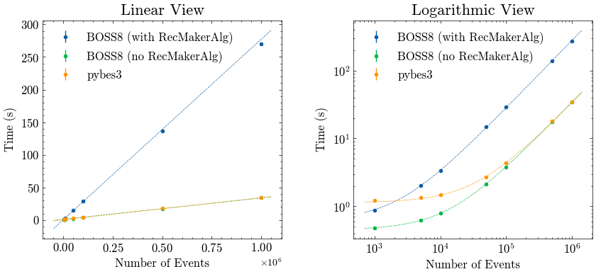

Documentation for pybes3
pybes3 is an unofficial python module that aims to make BES3 user easier to work with Python.
Help us improve pybes3!
If you have any suggestions, questions, or issues, please feel free to open an issue.
See Also
It is highly recommended to take a look at these Python modules before using pybes3:
User manual
-
Read
rtraw,rec,dst, and evenrawfiles.
-
Convert digi identifier id number to a human-readable format.
-
Global ID numbers for each detector element in
pybes3.
-
Retrieve and compute geometry information of detectors.
-
Parse and transform track parameters, such as helix, etc.
Performance
pybes3 is designed to be fast and efficient. It uses numba to accelerate some of the operations, such as helix operations, digi identifier conversion, etc. When numba is not available, pybes3 will use C++ to accelerate the operations.
Data reading
A simple benchmark is provided to compare the performance of pybes3 and BOSS8 in reading dst files:
-
For
pybes3, we directly read out theEventtree:import uproot import pybes3 pybes3.wrap_uproot() n_evt = ... # number of events to read files = [...] # list of ROOT files to read data_array = uproot.concatenate({f: "Event" for f in files}, entry_stop=n_evt) -
For
BOSS8, since when reading reconstruction data, it will load aRecMakerAlgalgorithm for each event, which slows down the reading performance significantly (4~5 times slower than pure reading), we test 2 cases:-
A loop on all events with default job-options (with
RecMakerAlgalgorithm):#include "$ROOTIOROOT/share/jobOptions_ReadRec.txt" #include "$OFFLINEEVENTLOOPMGRROOT/share/OfflineEventLoopMgr_Option.txt" EventCnvSvc.digiRootInputFile = { ... }; // list of ROOT files to read ApplicationMgr.EvtMax = ...; // number of events to read MessageSvc.OutputLevel = 7; // suppress messages -
A loop on all events without loading
RecMakerAlgalgorithm. This is similar to readingrtrawfiles and is the closest case to rawROOTreading:ApplicationMgr.ExtSvc += {"EvtPersistencySvc/EventPersistencySvc"}; ApplicationMgr.ExtSvc +={"RootEvtSelector/EventSelector","RootCnvSvc/EventCnvSvc"}; EventPersistencySvc.CnvServices += {"EventCnvSvc"}; #include "$OFFLINEEVENTLOOPMGRROOT/share/OfflineEventLoopMgr_Option.txt" EventCnvSvc.digiRootInputFile = { ... }; // list of ROOT files to read ApplicationMgr.EvtMax = ...; // number of events to read MessageSvc.OutputLevel = 7; // suppress messages
-
The machine used for the benchmark is a Intel i7-12700 with Great Wall GW7000 4TB SSD. The operating system is AlmaLinuxOS9 on WSL2. The number of events is set to 1000, 5000, 10000, 50000, 100000, 500000, and 1000000.
The results are shown below:

The fitting results with a linear function is:
| Initialization time (s) | Slope (s/10k-event) | |
|---|---|---|
BOSS8 (with RecMakerAlg) |
0.615 | 2.766 |
BOSS8 (no RecMakerAlg) |
0.451 | 0.338 |
| pybes3 | 1.135 | 0.326 |
The result shows that pybes3 is also comparable to BOSS8 when RecMakerAlg is not loaded, which means that the reading performance of pybes3 is close to the reading performance of ROOT itself. pybes3 is several times faster than BOSS8 with default settings, and slower when reading small number of events (~1000), since the module importing and initialization time is counted in the benchmark.
Since users may have to use the default settings of BOSS to read reconstruction data, pybes3 is still several times faster in this case.